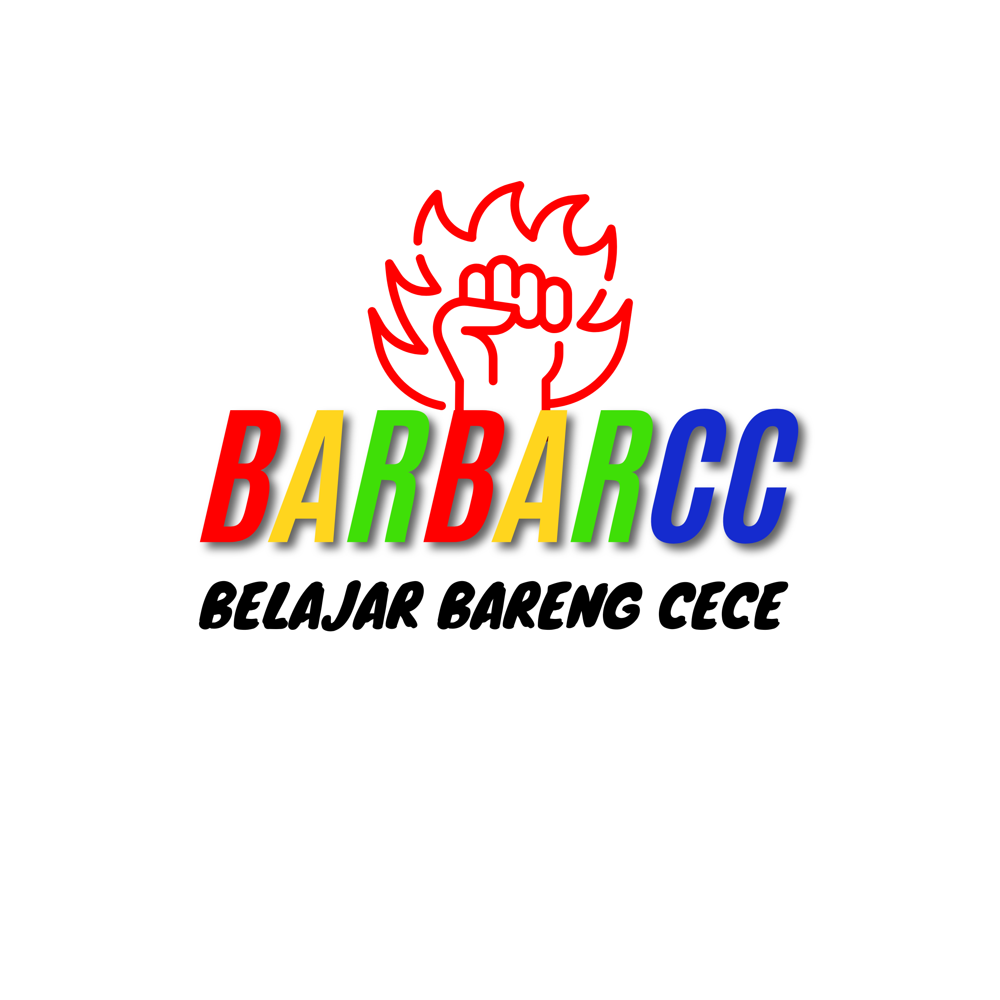

"Bantai Error Bareng Cece." Wadah buat lu yang mau gerak dari nol sampai jago ngoding dengan ekosistem yang asik dan terstruktur.
Pengikut di TikTok
Praktik Langsung
Relasi & Komunitas
Berawal dari pengalaman mendalami Rekayasa Perangkat Lunak, gwe sadar kalau belajar ngoding sendirian itu berat. BARBARCC hadir bukan sekadar jadi tempat baca materi, tapi jadi tongkrongan buat bantai error bareng-bareng.
Di sini, kita ngebangun mentalitas problem solver. Dari yang cuma bisa buka VS Code, sampai bisa punya website portofolio yang mengudara di internet.

Teknologi standar industri yang bakal lu kuasai di kelas ini.
Tulang dan kerangka utama website.
Makeover visual, tata letak & warna.
Logika interaktif dan otak dari web.
Deploy kodingan lu ke seluruh dunia.
Setiap orang punya potensi beda-beda. Ini yang bikin kita kuat.
Punya pertanyaan seputar koding? Sapa gwe di sini.